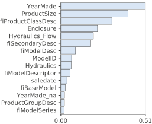
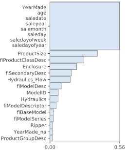
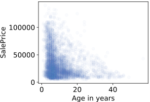
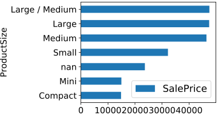
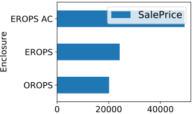
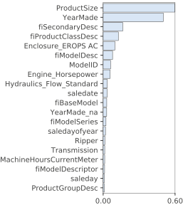
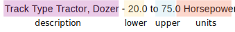
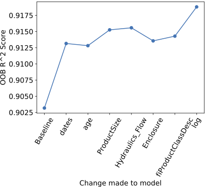

8 Bulldozer Feature Engineering
Terence Parr and Jeremy Howard
Copyright © 2018-2019 Terence Parr. All rights reserved.
Please don't replicate on web or redistribute in any way.
This book generated from markup+markdown+python+latex source with Bookish.
You can make comments or annotate this page by going to the annotated version of this page. You'll see existing annotated bits highlighted in yellow. They are PUBLICLY VISIBLE. Or, you can send comments, suggestions, or fixes directly to Terence.
In the last chapter, we cleaned up the bulldozer dataset and fixed missing values. The resulting model's OOB  score was good, but we can improve on that score by transforming some existing columns and synthesizing others. The techniques in this chapter extend and improve upon the feature engineering we did in Chapter 6 Categorically Speaking. The features to focus on are derived from the feature importance graph from the last chapter, and our engineering process will look like this:
score was good, but we can improve on that score by transforming some existing columns and synthesizing others. The techniques in this chapter extend and improve upon the feature engineering we did in Chapter 6 Categorically Speaking. The features to focus on are derived from the feature importance graph from the last chapter, and our engineering process will look like this:
- Shatter the saledate feature into its constituent components
- Convert ProductSize to an ordered categorical variable
- One hot encode Hydraulics_Flow and Enclosure
- Split fiProductClassDesc into its constituent components
- Take the logarithm of SalePrice target variable
As we go along, we'll examine the change in the model's OOB score and see what pops up in the feature importance graph. At the end, we'll plot the feature transformations versus model scores to visualize the improvements gained from our handiwork.
1If you get an error “read_feather() got an unexpected keyword argument 'nthreads',” then try:
import feather
feather.read_dataframe("data/bulldozer-train.feather")
Let's get started by loading the cleaned up dataframe we computed in the last chapter. We'll also load the original dataset so that we apply different transformations to ProductSize, Hydraulics_Flow, fiProductClassDesc, and Enclosure.1
df_raw = pd.read_feather("data/bulldozer-train.feather")
df_raw = df_raw.iloc[-100_000:] # same 100,000 records as before
df = pd.read_feather("data/bulldozer-train-clean.feather")
2Don't forget the notebooks aggregating the code snippets from the various chapters.
We should get a new baseline OOB score, this time using a model with 150 trees in the forest, rather than the 50 we used previously. As we increase the number of trees, the accuracy of an RF tends to improve but only up to a certain point. More importantly for assessing model improvements, another interesting thing happens as we increase the number of trees. Scores from the larger and larger models start to converge to the same score for the same OOB test set, run after run. As the Random Forest averages more and more predictions from the individual trees, the variance of its combined predictions goes down and, hence, so does the variance of the overall OOB scores. Here's how to get a stable baseline using the test() function used in previous chapters:2
X, y = df.drop(['SalePrice','saledate'], axis=1), df['SalePrice']
rf, oob_clean = test(X, y, n_estimators=150)
OOB R^2 0.90318 using 15,454,126 tree nodes with 43.0 median tree height
You'll notice that the OOB score of 0.903 slightly higher than the score we got at the end of the last chapter, due to the increased number of trees in the forest. Now let's dive into feature engineering.
Bias and variance
Statisticians use the words
bias and
variance when evaluating the effect of model complexity on model accuracy. A model that systematically predicts values that differ from known true values is said to be
biased. The larger that difference, the higher the bias. High bias models are not complex enough to capture the relationship between features and the target variable--they are
underfit. If the model gives widely fluctuating results, depending on the test set, the model has high variance and is
overfit. The simple way to think of these terms is that bias is accuracy and variance is generality.
The use of “variance” in this way is suboptimal, particularly when “overfit” is available and more explicit, because variance is used in so many contexts. For example, the term variance is also applicable when discussing the effect of increasing the number of trees in a Random Forest. Constructing an RF is an inherently random process and so multiple RF models trained on the exact same training set will be different. That means the prediction of these models on the exact same test set or OOB set will also be different. It's appropriate to describe the variation in the models' predictions as, well, variance.
Imagine that we build a model with, say, 10 trees and get an OOB score. Repeat that train-and-score process many times, and you will find lots of variation in the scores. Now, increase the number of trees to 100 and repeat the trials. You will notice that the variation between model OOB scores is significantly lower than models trained with only 10 trees. (The central limit theorem comes into play when we average the predictions of multiple trees.)
So some people use variance to mean generality when comparing multiple test sets but also use variance to mean reduced prediction fluctuations on the same test set but larger forests. We recommend that you shy away from bias and variance, in favor of the more explicit accuracy and generality or underfit and overfit.
8.1 Synthesizing date-related features
Date columns in datasets are often predictive of target variables, such as the saledate in the bulldozer dataset. The date of sale and the year of manufacture together are strongly predictive of the sale price. As a general rule, we recommend shattering date columns into their constituent components to include: year, month, day, day of week (1..7), day of year (1..365), and even things like “end of quarter” and “end of month.” Pandas provides convenient functions to extract all of this information from a single datetime64 entity. After extracting the components, convert the datetime64 to an integer with the number of seconds since 1970 (the usual UNIX time measurement). Here's a basic function that illustrates how to synthesize date-related features:
def df_split_dates(df,colname):
df["saleyear"] = df[colname].dt.year
df["salemonth"] = df[colname].dt.month
df["saleday"] = df[colname].dt.day
df["saledayofweek"] = df[colname].dt.dayofweek
df["saledayofyear"] = df[colname].dt.dayofyear
df[colname] = df[colname].astype(np.int64) # convert to seconds since 1970
After using the function, we can use Pandas' filter() to examine the newly-created columns:
df_split_dates(df, 'saledate')
df.filter(regex=('sale*')).head(2).T
Since we don't know which components, if any, will be predictive it's a good idea to just add whatever you can derive from the date. For example, you might want to add a column indicating that a day was a business holiday or even whether there was a big storm. Beyond the usual year/month/day and other numeric components, the new columns you synthesize will be application-specific. RF models won't get confused by the extra columns and we can excise useless features later, after finishing feature engineering. Let's check the effect of date-splitting on model accuracy:
X, y = df.drop('SalePrice', axis=1), df['SalePrice']
rf, oob_dates = test(X, y, n_estimators=150)
OOB R^2 0.91315 using 14,917,750 tree nodes with 43.0 median tree height
We get a nice bump from our clean baseline score of 0.903 to 0.913 and the number of nodes is smaller.
Now that we have a saleyear column in addition to the YearMade, let's create an age feature that explicitly states the age of a bulldozer for sale. The age of a vehicle is obviously important and, while the model has access to both fields already, it's a good idea to make life as easy as possible on the model:
df['age'] = df['saleyear'] - df['YearMade']
X, y = df.drop('SalePrice', axis=1), df['SalePrice']
rf, oob_age = test(X, y, n_estimators=150)
OOB R^2 0.91281 using 14,896,494 tree nodes with 43.0 median tree height
The OOB score is roughly the same after we add age, but the number of nodes is a little smaller.
Looking at the feature importance graph, none of the date-related features we added appear to be important, other than the converted saledate. YearMade is still very important, but age appears to be not that important.
» Generated by code to left

I = importances(rf, X, y)
plot_importances(I.head(15))
The reason for this is subtle but has to do with the fact that all of the date-related features are highly correlated, meaning that if we dropped one of them, the other features would “cover” for it. It's better to treat all of those date-related features as a meta-feature for feature importance graphs:
» Generated by code to left

features = list(df.drop('SalePrice',axis=1).columns)
datefeatures = list(df.filter(regex=("sale*")).columns)
for f in datefeatures:
features.remove(f)
features.remove('YearMade')
features.remove('age')
features += [['YearMade','age']+datefeatures]
I = importances(rf, X, y, features=features)
plot_importances(I.head(15))
While age might not individually pop up in the importance graph, a graph of age in years versus sale price confirms our belief that older vehicles sell for less on average. That correlation (relationship between the age feature and target price) implies at least some predictability for age.
» Generated by code to left

fig,ax = plt.subplots()
df_small = df.sample(n=5_000) # don't draw too many dots
ax.scatter(df_small['age'], df_small['SalePrice'],
alpha=0.03, c=bookcolors['blue'])
ax.set_ylabel("SalePrice")
ax.set_xlabel("Age in years")
Let's keep all of these features for now and move on to the next task.
8.2 ProductSize is an ordinal variable
The ProductSize feature is important according to the feature importance graph so it's worth revisiting the feature to see if we can improve upon the default label encoding. To get corroborating evidence of its importance, we can also look at the relationship between product size and sale price using Pandas' groupby. By grouping the data by ProductSize then calling mean(), we get the average SalePrice (and other columns) across product sizes:
» Generated by code to left

temp = df_raw.fillna('nan') # original dataset
temp = temp.groupby('ProductSize').mean()
temp[['SalePrice']].sort_values('SalePrice').plot.barh()
3When copying a column from one dataframe to another, df_raw to df, using the assignment operator, Pandas can silently do weird things depending on how the two dataframes are indexed. The safest approach is to copy over the NumPy version of the column by using .values, as we have done here.
(Here we're using the built-in Pandas shortcut to matplotlib's bar chart: .plot.barh().) There's a clear relationship between the size of the product and the sale price, as we would expect. Since Large is bigger than Small, the ProductSize feature is ordered, which means we can use an ordinal encoding. That just means that we assign numbers to the category values according to their size. A quick web search also shows that Mini and Compact bulldozers are the same size, leading to the following encoding:3
sizes = {None:0, 'Mini':1, 'Compact':1, 'Small':2, 'Medium':3,
'Large / Medium':4, 'Large':5}
df['ProductSize'] = df_raw['ProductSize'].map(sizes).values
print(df['ProductSize'].unique())
[0 2 4 3 1 5]
By using an ordinal encoding rather than a label encoding, we get a small bump in OOB score:
X, y = df.drop('SalePrice', axis=1), df['SalePrice']
rf, oob_ProductSize = test(X, y, n_estimators=150)
OOB R^2 0.91526 using 14,873,450 tree nodes with 45.0 median tree height
There are two other important features, Hydraulics_Flow and Enclosure, that we can easily encode in a more structured way than label encoding.
8.3 One-hot encoding Hydraulics_Flow
When in doubt, we encode categorical variables using label encoding. As we saw in the last section, however, if we notice that the variable is ordinal, we use that type of encoding. When the number of category levels is small, say, 10 or less we one hot encode the variable, assuming the category is important. One-hot encoding yields what people call dummy variables, boolean variables derived from a categorical variable where exactly one of the dummy variables is true for a given record. There is a new column for every categorical level. Missing category values yield 0 in each dummy variable.
One-hot encoding
The easiest way to pickup the idea behind one-hot encoding is through a trivial example. Imagine we have a categorical variable with three levels (three departments). We start out with a dataframe like this:
df_toy = pd.DataFrame()
df_toy['Dept'] = ['Math','CS','Physics',np.nan]
df_toy
Pandas can give us the dummy variables for that column and concatenate them onto the existing dataframe:
onehot = pd.get_dummies(df_toy['Dept'])
df_toy = pd.concat([df_toy, onehot], axis=1)
df_toy
Now, instead of a number, the “hot” position indicates the category. Notice how the missing value ends up with none hot. If you're wondering what “hot” refers to, “one hot” is an electrical engineering term referring to multiple chip outputs where at most one output has a nonzero voltage at any given time.
Feature Hydraulics_Flow has “High Flow” and “Standard” levels, but the vast majority of records are missing a value for this feature:
print(df_raw.Hydraulics_Flow.value_counts(dropna=False))
NaN 86819
Standard 12761
High Flow 402
None or Unspecified 18
Name: Hydraulics_Flow, dtype: int64
Before one-hot encoding let's normalize the columns so string “None or Unspecified” is the same as missing (np.nan) then get dummy variables:
df['Hydraulics_Flow'] = df_raw['Hydraulics_Flow'].values
df['Hydraulics_Flow'] = df['Hydraulics_Flow'].replace('None or Unspecified', np.nan)
onehot = pd.get_dummies(df['Hydraulics_Flow'],
prefix='Hydraulics_Flow',
dtype=bool)
Next, we replace column Hydraulics_Flow with the dummy variables by concatenating them onto the df DataFrame and deleting the unused column:
del df['Hydraulics_Flow']
df = pd.concat([df, onehot], axis=1)
Checking the OOB , we see that it's about the same as before and the feature importance graph shows that the most predictive category is Standard. (See feature Hydraulics_Flow_Standard in the graph.)
X, y = df.drop('SalePrice', axis=1), df['SalePrice']
rf, oob_Hydraulics_Flow = test(X, y, n_estimators=150)
OOB R^2 0.91558 using 14,872,994 tree nodes with 45.0 median tree height
8.4 One-hot encoding Enclosure
Let's follow this same one-hot procedure for Enclosure because it's also a categorical variable with only a few levels:
print(df_raw.Enclosure.value_counts(dropna=False))
OROPS 40904
EROPS w AC 34035
EROPS 24999
NaN 54
EROPS AC 6
NO ROPS 2
Name: Enclosure, dtype: int64
First, let's normalize the categories:
df['Enclosure'] = df_raw['Enclosure'].values
df['Enclosure'] = df['Enclosure'].replace('EROPS w AC', 'EROPS AC')
df['Enclosure'] = df['Enclosure'].replace('None or Unspecified', np.nan)
df['Enclosure'] = df['Enclosure'].replace('NO ROPS', np.nan)
Let's also look at the relationship between this variable and the sale price:
» Generated by code to left

temp = df.groupby('Enclosure').mean()
temp[['SalePrice']].sort_values('SalePrice').plot.barh()
That's interesting, “EROPS AC” gets, on average, twice the price of the other bulldozers. A web search reveals that ROP means “Roll Over Protection Structure,” so EROPS is an enclosed ROPS (a cabin) and OROP is an open protective cage. AC means “Air Conditioning.” The model suggests that a bulldozer with an enclosed cab gets a higher price and one with air conditioning gets the highest price, on average. Unfortunately, the OOB score drops a little bit but dummy variable Enclosure_EROPS AC is important per the importance graph.
onehot = pd.get_dummies(df['Enclosure'],
prefix='Enclosure',
dtype=bool)
del df['Enclosure']
df = pd.concat([df, onehot], axis=1)
X, y = df.drop('SalePrice', axis=1), df['SalePrice']
rf, oob_Enclosure = test(X, y, n_estimators=150)
OOB R^2 0.91356 using 14,896,328 tree nodes with 44.0 median tree height
» Generated by code to left

I = importances(rf, X, y)
plot_importances(I.head(20))
There are other important categorical variables, such as fiSecondaryDesc, but it has 148 levels, which would create 148 new columns, which would more than triple the number of overall columns in the dataframe. We recommend label encoding such categorical variables.
8.5 Splitting apart fiProductClassDesc
Feature fiProductClassSpec is string variable rather than a categorical variable. The values are descriptions of the product class and some components of the string appear to correlate with higher prices:
temp = df_raw.groupby('fiProductClassDesc').mean()
temp[['SalePrice']].sort_values('SalePrice').head(15).plot.barh()

The bulldozers with higher operating capacity values seem to fetch higher prices. The model is clearly getting some kind of predictive power out of this feature when label encoded (per the feature important graph). But, we can make the information more explicit by splitting the description into four pieces:

The description is a categorical variable, chosen from a finite set of categories such as “Skip Steer Loader.” The lower and upper components are numerical features and the units is a category, such as “Horsepower” or “Lb Operating Capacity.” We can call the latter three components the “spec”. Because the spec is sometimes Unidentified, the spec components could be missing.
To pull apart the description string, let's do it in two steps. First, copy the original non-label-encoded string from df_raw and split it at the hyphen:
# careful when copying between dataframes; use .values
df_split = df_raw.fiProductClassDesc.str.split(' - ',expand=True).values
df['fiProductClassDesc'] = df_split[:,0]
df['fiProductClassSpec'] = df_split[:,1] # temporary column
print(df['fiProductClassDesc'].unique())
['Track Type Tractor, Dozer' 'Hydraulic Excavator, Track' 'Wheel Loader'
'Skid Steer Loader' 'Backhoe Loader' 'Motorgrader']
This leaves the right-hand side of the string as the spec string:
print(df['fiProductClassSpec'].unique()[:5])
['20.0 to 75.0 Horsepower' '12.0 to 14.0 Metric Tons'
'14.0 to 16.0 Metric Tons' '33.0 to 40.0 Metric Tons'
'225.0 to 250.0 Horsepower']
Next, split that string using a regular expression that captures the two numbers and units to the right:
pattern = r'([0-9.\+]*)(?: to ([0-9.\+]*)|\+) ([a-zA-Z ]*)'
df_split = df['fiProductClassSpec'].str.extract(pattern, expand=True).values
df['fiProductClassSpec_lower'] = pd.to_numeric(df_split[:,0])
df['fiProductClassSpec_upper'] = pd.to_numeric(df_split[:,1])
df['fiProductClassSpec_units'] = df_split[:,2]
del df['fiProductClassSpec'] # remove temporary column
df.filter(regex=('fiProductClassSpec*')).head(3)
Because we have introduced columns with potentially missing values and new categorical variables, we have to prepare the dataset following our usual procedure:
fix_missing_num(df, 'fiProductClassSpec_lower')
fix_missing_num(df, 'fiProductClassSpec_upper')
# label encode fiProductClassDesc fiProductClassSpec_units
df_string_to_cat(df)
df_cat_to_catcode(df)
We see a small bump in model performance from the transformation of this feature and a feature importance graph shows that the individual components we synthesized are important.
X, y = df.drop('SalePrice', axis=1), df['SalePrice']
rf, oob_fiProductClassDesc = test(X, y, n_estimators=150)
OOB R^2 0.91429 using 14,873,080 tree nodes with 43.0 median tree height
8.6 Training with log(price)
The original Kaggle competition measured model performance based upon the logarithm of the price, so we should also do that because we're going to compare our model's performance to the competition leaders in the next chapter. Also, as we discussed in Section 5.5 Log in, exp out, it often helps to take the logarithm of the target variable when dealing with prices. (We usually care more that two prices are different by 20% than by a fixed $20.) Transforming the target variable is a simple matter of calling the log() function:
X, y = df.drop('SalePrice', axis=1), df['SalePrice']
y = np.log(y)
rf, oob_log = test(X, y, n_estimators=150)
OOB R^2 0.91881 using 14,865,740 tree nodes with 44.0 median tree height
That 0.919 score is a nice bump in accuracy, all from a simple mathematical transformation.
8.7 The effect of feature engineering on model performance
We've done a lot of work in this chapter to improve the features presented to the RF model, so let's compare the effect of these changes on model performance. The following figure zooms in on the range of OOB scores from our baseline to the final log feature improvement. (Code for this figure is in the notebook for this chapter.)

Overall the model OOB score has improved from 0.903 to 0.919, a 16.141% improvement; (oob_log-oob_clean)*100/(1-oob_clean)).
For the most part, our feature engineering efforts have paid off. The one-hot encoding of Hydraulics_Flow and Enclosure, however, doesn't seem to have improved model performance. In fact, Enclosure's one-hot encoding seems to have hurt performance. But, remember, we are measuring accuracy and looking at a feature importance graph using the training set, not a validation set. As it turns out, one-hot encoding Enclosure does seem to improve metrics where it counts, on validation and other test sets. (While working on the next chapter, we compared scores from models with and without one-hot encoded Enclosure columns.) For the moment, it's best to keep all features available to the model.
8.8 Summary
Let's summarize the techniques that we learned in this chapter.
Dates
As a general rule, break apart date columns into components such as day, month, year, day of week, day of year, and any other elements relevant to your application, such as “end of quarter” or “is holiday.” Synthesizing new columns based upon the date looks like this:
df["salemonth"] = df[colname].dt.month
Then convert the original date column to an integer representing the number of seconds since 1970 using:
df[colname] = df[colname].astype(np.int64) # convert date to seconds
Ordinal encoding
Categorical variables whose elements have order should be ordinal encoded using integers that mirror the relationship between category levels. For example, if a column has low, medium, and high levels, an encoding such as the following would work where missing values become 0:
m = {np.nan:0, 'low':1, 'medium':2, 'high':3}
df[colname] = df_raw[colname].map(m)
One-hot encoding
Non-ordered (nominal) categorical variables with about 10 or fewer levels can be one-hot encoded. Here is the basic procedure to replace a column with multiple dummy columns that one-hot encode the column:
onehot = pd.get_dummies(df[colname])
df = pd.concat([df, onehot], axis=1)
del df[colname]
Split strings encoding
In this chapter, we split a string based upon the hyphen character using split():
# get two columns
df_descr_spec_split = df[colname].str.split(' - ',expand=True)
and then used regular expressions to extract three components from the right-hand string using extract():
# get three columns
pattern = r'([0-9.\+]*)(?: to ([0-9.\+]*)|\+) ([a-zA-Z ]*)'
df_split = df['fiProductClassSpec'].str.extract(pattern, expand=True)
We created new columns in df from the columns extracted in this way.
There are lots of other kinds of strings (in other datasets) you might want to split apart, such as URLs. You can create new columns that indicate https vs http, the top level domain, domain, filename, file extension etc.
{kind=link}
{kind=link}
{kind=link}
{kind=link}
{kind=link}
{kind=link}
{kind=link}
{kind=link}